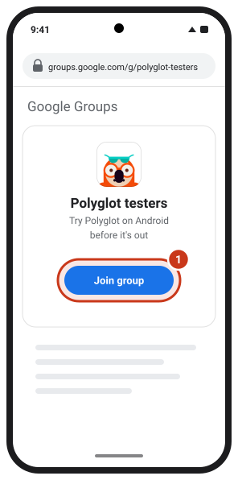
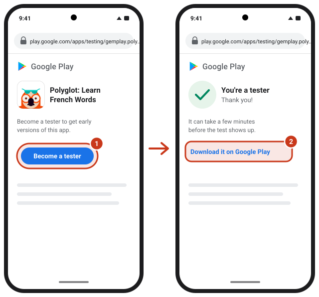
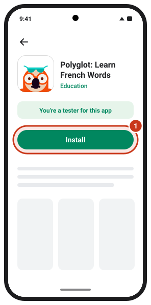
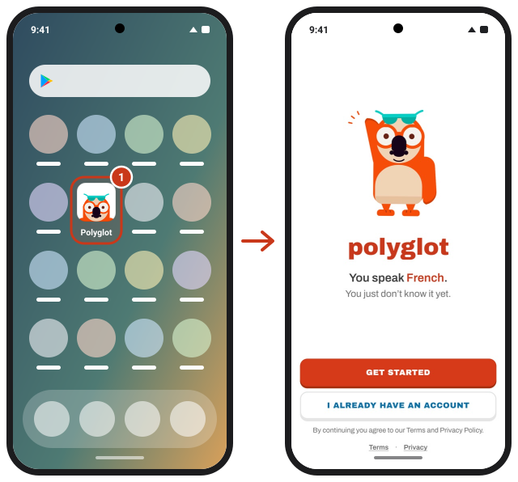

Try Polyglot on Android before it's out
Polyglot teaches French by starting with the words you already know. The Android beta comes straight from Google Play. It's free and takes about three minutes.
Join the Polyglot betaNeeds an Android phone with Android 8 or later and Google Play. On an iPhone? The iPhone beta is here.
Install
Use the same Google account in all three steps: the one your phone's Play Store uses.
1Join the testers group
Tap Join the Polyglot beta above. In Google Groups, tap 1 Join group. You won't get any emails from the group.

2Become a tester
Open the Polyglot testing page and tap 1 Become a tester. Then tap 2 Download it on Google Play. If Google Play says the app isn't available yet, wait a few minutes and try again.

3Install from Google Play
Google Play opens Polyglot and says you're a tester. Tap 1 Install. You can also find it later by searching for Polyglot: Learn French Words.

4Open Polyglot
Find Polyglot on your home screen or in your apps. Tap Get started and Poly takes it from there.

Send feedback
This is what helps most. Take a screenshot (press Power and Volume down together) and email it to gemplay.app@gmail.com with a note on what was confusing, broken or slow. Your phone model helps too.
Good to know
Polyglot Max costs real money in this beta. Unlike Apple's TestFlight, Google Play charges for purchases in a test. You don't need Max to help: the free version gives you 2 new lessons every day.
Updates arrive through Google Play like for any other app.
Your progress stays on your phone. Signing in with Google (on the Me tab) is optional and saves it to your account.
What we see. Polyglot sends us crash reports with your phone model and Android version. If you email us, we see your email address. More in our Privacy Policy.
Leaving the beta. After the 14 days, open the testing page and choose Leave the program, or simply uninstall the app.
Спробуйте Polyglot на Android до релізу
Polyglot навчає французької, починаючи зі слів, які ви вже знаєте. Бета для Android встановлюється прямо з Google Play. Це безплатно і займає приблизно три хвилини.
Приєднатися до бети PolyglotПотрібен телефон з Android 8 або новішим і Google Play. У вас iPhone? Бета для iPhone тут.
Встановлення
В усіх трьох кроках використовуйте той самий акаунт Google: той, що й у Play Маркеті на телефоні.
1Приєднайтеся до групи тестувальників
Натисніть Приєднатися до бети Polyglot вище. У Google Groups натисніть 1 Join group («Приєднатися до групи»). Листів від групи не буде.
2Станьте тестувальником
Відкрийте сторінку тестування Polyglot і натисніть 1 Become a tester («Стати тестувальником»). Потім натисніть 2 Download it on Google Play («Завантажити з Google Play»). Якщо Google Play пише, що застосунок ще недоступний, зачекайте кілька хвилин і спробуйте знову.
3Встановіть з Google Play
Google Play відкриє Polyglot і покаже, що ви тестувальник. Натисніть 1 Install («Встановити»). Пізніше застосунок можна знайти пошуком Polyglot: Learn French Words.
4Відкрийте Polyglot
Знайдіть Polyglot на головному екрані або серед застосунків. Натисніть Get started, і далі вас веде Poly.
Відгуки
Це допомагає найбільше. Зробіть скриншот (одночасно натисніть живлення і зменшення гучності) і надішліть його на gemplay.app@gmail.com з коментарем: що було незрозуміло, зламалося чи гальмувало. Модель телефону теж допоможе.
Варто знати
Polyglot Max у цій беті платний по-справжньому. На відміну від Apple TestFlight, Google Play списує гроші за покупки в тесті. Max не потрібен, щоб допомогти: безплатна версія дає 2 нові уроки щодня.
Оновлення приходять через Google Play, як і для будь-якого застосунку.
Ваш прогрес зберігається на телефоні. Вхід через Google (вкладка Me) необов'язковий і зберігає прогрес у вашому акаунті.
Що ми бачимо. Polyglot надсилає нам звіти про збої разом з моделлю телефону та версією Android. Якщо ви напишете нам, ми побачимо вашу адресу. Докладніше — у Політиці конфіденційності (англійською).
Як вийти з бети. Після 14 днів відкрийте сторінку тестування і виберіть Leave the program («Вийти з програми»), або просто видаліть застосунок.